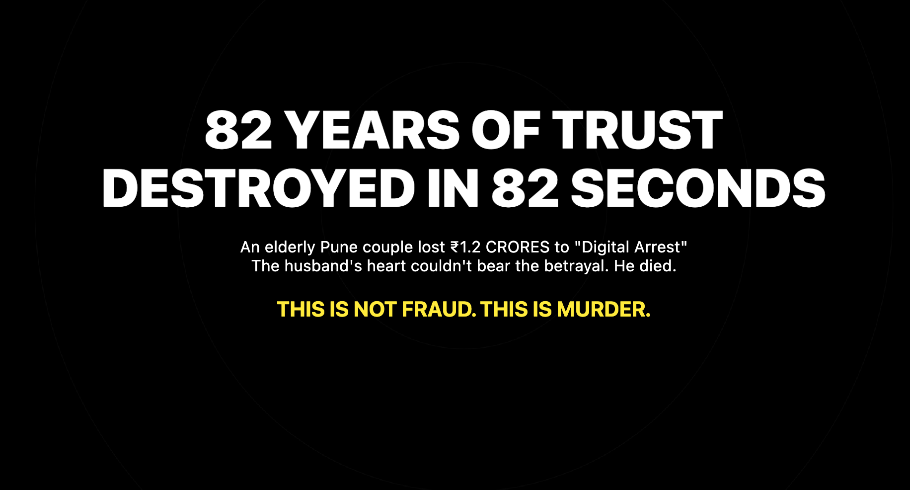
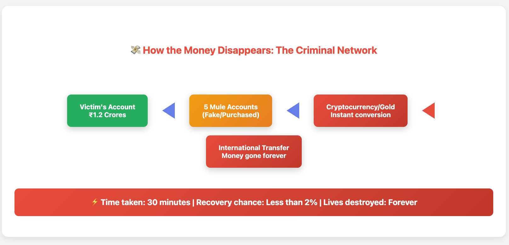
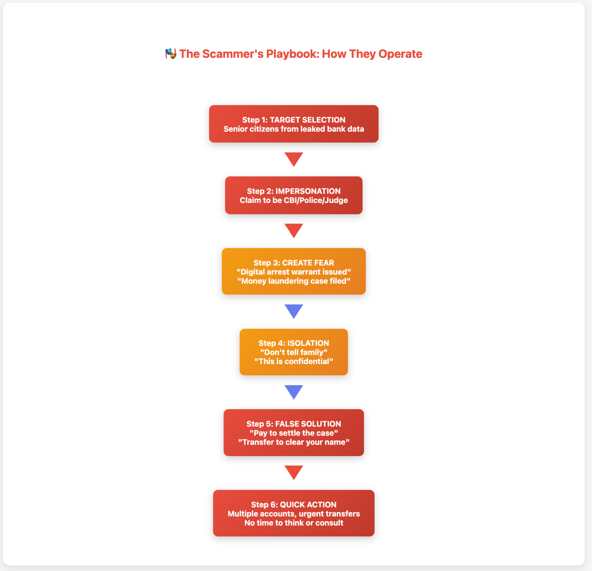
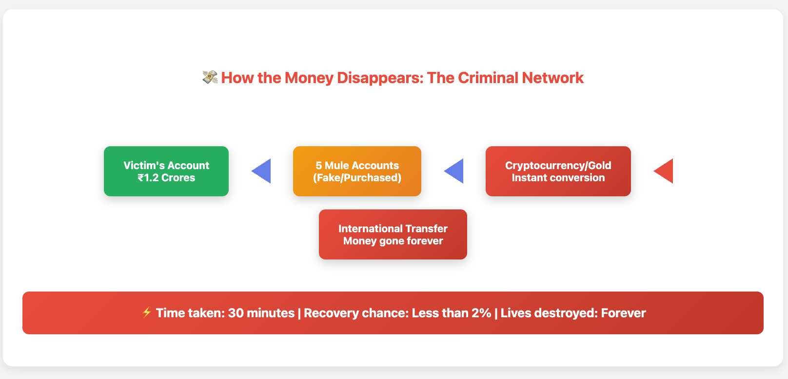
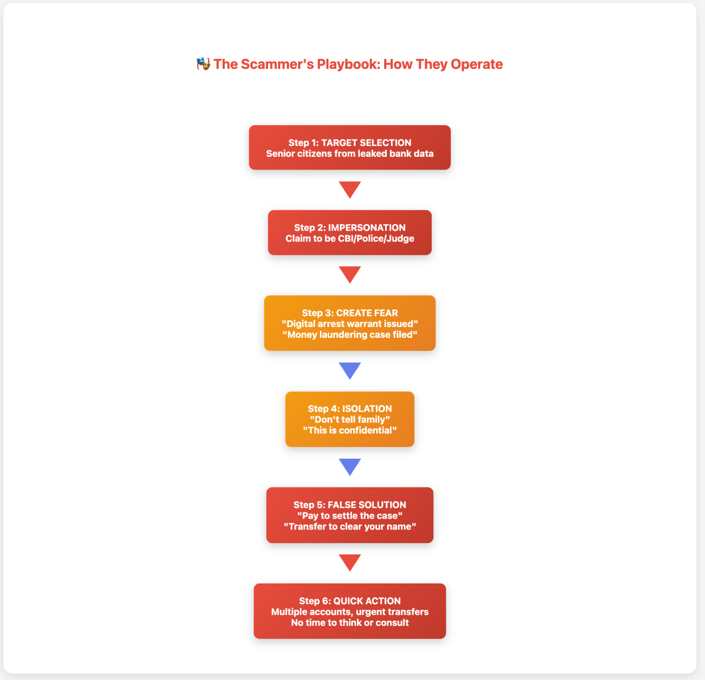
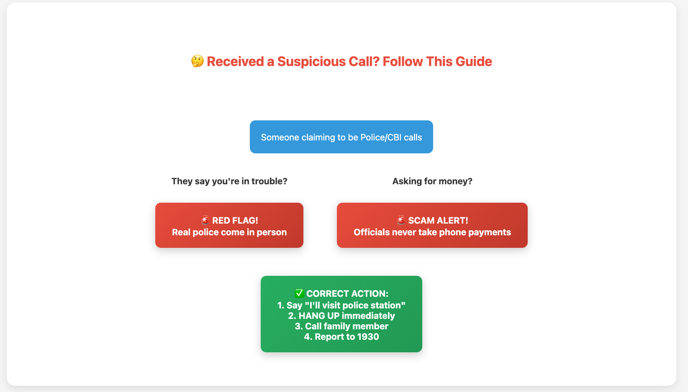

In October 2024, an 82-year-old grandfather in Pune sat in his home, the same home where he had raised his children and welcomed his grandchildren. The phone rang with what seemed like an official call. Within hours, his lifetime savings of ₹1.2 crores had vanished. Days later, the weight of this betrayal stopped his heart forever.
This isn't just about money. It's about the sacred trust between citizens and their institutions—a trust that was weaponized against those who deserve our protection the most.

Understanding the Human Cost
The couple's story, as shared by their family, reveals a calculated exploitation of fear and respect for authority. The criminals didn't just steal money; they stole dignity, peace of mind, and ultimately, a life.
"The crooks offered a settlement and promised to remove their names from the case if the couple paid up," the family shared. "They exhausted all their savings, including money received from their daughters."
Only when the calls stopped did the couple find the courage to tell their children. By then, it was too late.
 
The Stark Reality in Maharashtra
The numbers tell a troubling story:

These aren't just statistics. Each number represents a family's devastation, a senior's shattered trust, a lifetime of careful savings evaporated.
Why Our Elders Are Vulnerable
Cybercrime investigator Rohan Nyayadish explains: "Fraudsters target senior citizens because they fear authority and rarely discuss such matters with relatives immediately."
Our parents and grandparents grew up in an India where:
A government officer's word was sacred
Banks were temples of trust
Technology was simpler and safer
Today, criminals exploit these very values. They operate from small cities, use virtual networks to hide their tracks, and prey on those who built the India we inherit.
Five Essential Protections We Need Now

1. The Elder Safety Net
Every bank account held by someone over 60 should automatically include:
A 24-hour cooling period for large transactions
Family notification for transfers above ₹50,000
Voice stress detection during phone banking
Dedicated relationship managers who know their clients personally
2. The Golden Hour Response
Just as we have golden hour protocols in medical emergencies:
A single helpline (enhanced 1930) with immediate freeze capability
Trained counselors who speak regional languages
Direct coordination with banks to stop transfers in real-time
No questions asked in the first 48 hours
3. Accountability with Compassion
Banks must share responsibility when elderly customers are defrauded
Simplified claim processes that don't require technical knowledge
Provisional refunds while investigations proceed
Regular audits of how banks protect vulnerable customers
4. Community Protection Circles
Neighborhood awareness programs in housing societies
Children teaching parents about digital safety during family time
Banks conducting monthly safety workshops
Local police visiting senior citizen associations
5. Dignity in Digital Banking
Option for seniors to require family co-authorization
Clear, large-print warnings about common scams
Regular check-in calls from banks to elderly customers
Respect for those who choose traditional banking methods
What Every Family Can Do Today
Have this conversation at dinner tonight:

Save 1930 in your parents' phones as "Cyber Police Emergency"
Create a family code word that only real family members know
Establish a rule: Any financial request over ₹10,000 needs a family video call
Practice saying NO: Role-play how to hang up on suspicious calls
Remove shame from the equation: Make it clear that asking for help is strength, not weakness
A Message to Our Leaders
To the Reserve Bank of India, the Finance Ministry, Financial Institutions and our elected representatives:
cc Nirmala Sitharaman Narendra Modi Reserve Bank of India (RBI) ICICI Bank Axis Bank HDFC Bank ReBIT | Reserve Bank Information Technology Pvt. Ltd. India Against Cyber Crime Greater Mumbai Police
The 82-year-old gentleman who passed away trusted the system you oversee. He saved every rupee believing his money was safe. His death asks a simple question: When did we stop protecting those who protected us?
This isn't about blame—it's about responsibility. The same innovation that brought us UPI can surely create shields for our vulnerable. The same systems that track every transaction for GST can trace stolen funds for justice.
The Technology We Need
For Banks:
AI systems that flag unusual senior citizen transactions
Biometric confirmation for large transfers
Automatic family alerts for suspicious activity
Insurance coverage for fraud losses
For Law Enforcement:
Real-time transaction tracking systems
Interstate cyber crime coordination cells
Fast-track courts for senior citizen cases
Witness protection for bank whistleblowers
In Memory and Hope
To the family in Pune: Your father's story will not be forgotten. His tragedy must become the catalyst for change.
To every reader: You have parents, grandparents, elderly neighbors. Their safety in digital India is our collective responsibility.
To our elders: Your caution is not weakness. Your questions are not foolish. Your fears are valid. We failed to protect you, and we must do better.
The Path Forward
Change doesn't require revolution—it requires resolution. Here's what we commit to:
As Citizens:
We will check on our elderly neighbors
We will teach with patience, not frustration
We will create safety nets in our communities
We will demand better from our institutions
As Institutions:
Banks must prioritize protection over profit
Government must legislate with urgency
Law enforcement must treat elder fraud as priority crime
Society must restore the covenant of care
A Final Thought
The measure of a civilization is how it treats its most vulnerable. In our rush toward Digital India, we cannot leave behind those who carried us this far.
That 82-year-old grandfather deserved to spend his final days in peace, surrounded by love, not dying of a broken heart because strangers stole more than money—they stole his faith in humanity.
Let his story end not with despair, but with determination. Let every senior citizen in India know: You are not alone. Your fears are heard. Your protection is our priority.
Together, we can ensure no family endures this preventable tragedy again.
In loving memory of all seniors who suffered in silence
If you found this helpful, please share with your family, housing society, and local representatives. Every conversation about elder safety can save a life.
Resources:
Cyber Crime Helpline: 1930
National Helpline for Senior Citizens: 14567
Report suspicious calls: cybercrime.gov.in
Join the Movement: #ElderSafetyFirst #ProtectingOurElders #SafeDigitalIndia #CommunityShield
Written with contributions from cyber security experts, elder care advocates, and families affected by digital fraud.